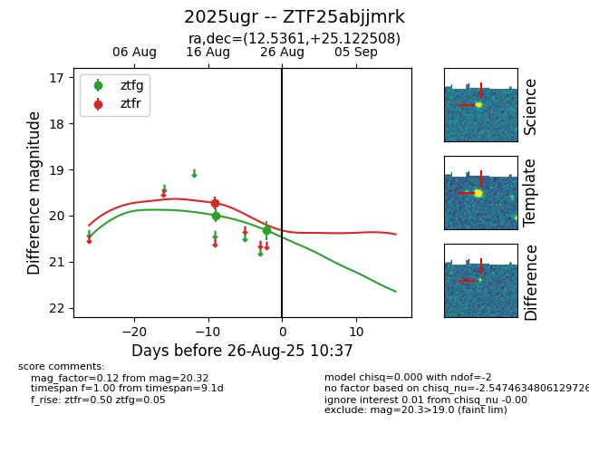

Target 2025ugr at 2025-08-26 10:37, see:
FINK: fink-portal.org/ZTF25abjjmrk
Lasair: lasair-ztf.lsst.ac.uk/objects/ZTF25abjjmrk
ALeRCE: alerce.online/object/ZTF25abjjmrk
TNS: wis-tns.org/object/2025ugr
YSE: ziggy.ucolick.org/yse/transient_detail/2025ugr
alt names
ZTF25abjjmrk (ztf,fink)
2025ugr (tns,yse)
coordinates:
equatorial (ra, dec) = (12.5361,+25.12251)
galactic (l, b) = (122.5617,-37.74831)
photometry
last ztfg=20.32, ztfr=19.73
2 ztfg, 1 ztfr detections
